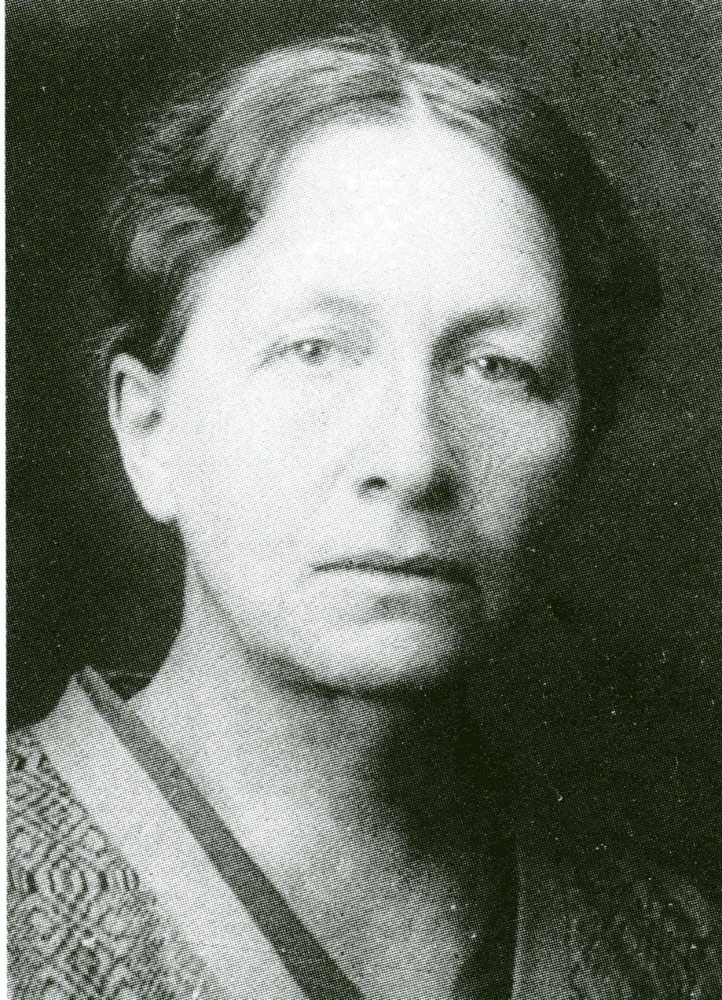
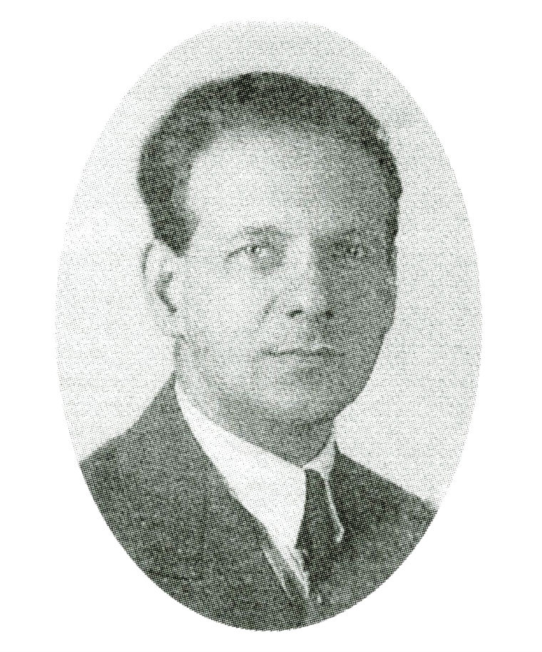

Слияние этих двух библиотек не было, вероятно, исторически обусловленным, но способствовало созданию мощной библиотеки в стенах Московской консерватории. Пришедшие в библиотеку специалисты из Музыкально-теоретической библиотеки имели неоценимый опыт научной библиотечной работы: справочно-библиографической, архивно-рукописной, просветительской.
 Музыкально-теоретическая библиотека, «придуманная» группой подвижников и прогрессивно ориентированных
людей, как показала её дальнейшая судьба, оказалась востребованной как органичная, а не искусственно
созданная структура, приучившая музыкантов осмысленно относиться к сути происходящих музыкальных
событий, давать им научную оценку. Библиотека Московской консерватории, обогащённая фондами нескольких
музыкальных библиотек, обрела новое качество.
Музыкально-теоретическая библиотека, «придуманная» группой подвижников и прогрессивно ориентированных
людей, как показала её дальнейшая судьба, оказалась востребованной как органичная, а не искусственно
созданная структура, приучившая музыкантов осмысленно относиться к сути происходящих музыкальных
событий, давать им научную оценку. Библиотека Московской консерватории, обогащённая фондами нескольких
музыкальных библиотек, обрела новое качество.
В 1928 г. библиотекой была приобретена музыкальная коллекция певицы А.В. Панаевой-Карцевой (жены двоюродного племянника П.И. Чайковского), состоящая из партитур и клавиров опер и ораторийвсего свыше 700 экз.
В 1929 г. библиотека Московской консерватории стала, наконец, единой.
В одном из двух помещений, принадлежавших консерваторской библиотеке (под Малым залом), были размещены фонды бывшей Музыкально-теоретической библиотеки. Занимавший это помещение ранее Музей им. Н.Г. Рубинштейна был переведён в другое место. В это время заведующей библиотекой стала Галина Маврикиевна Ванькович, которая занимала этот пост до 1935 г.
К первой трети ХХ столетия музыкальная Москва (да и не только Москва) получила библиотеку, котораяединственнаяимела фонд, способный удовлетворить запросам всех категорий читателей, от меломанов и учащихся до крупных учёных и исполнителей мирового уровня. Полноценное обслуживаниене только Московской консерватории, но и всех обращавшихся в библиотеку,к сожалению, было затруднено из-за малочисленности её штата и недостаточного профессионализма рядовых библиотекарей.
Использование фонда, особенно нотного, требовало библиотечного и библиографического его освоения. Разворачивалась серьёзная библио- и нотографическая работа, сначала совместная с коллегами из Государственной Академии художественных наук и искусств, а затем уже самостоятельная.
С 1932 г. в структуре библиотеки появляется справочно-библиографичекий отдел, в задачу которого пока ещё не входит информационное обслуживание читателей, но который своими многочисленными рекомендательными библиографиями через Ассоциацию научных библиотек снабжает московские библиотеки. В 1934 г. библиотека включилась в Объединение музыкальных библиотек, входивших в состав Ассоциации научных библиотек РСФСР при Всесоюзной библиотеке имени в.и. Ленина. Целью этого учреждения была .рационализация деятельности музыкальных библиотек; отсюда ряд задач, которые Объединение ставило перед собой, а именно: выработка единых методов работы в музыкальных библиотеках, координация справочно-библиографической работы и выписки иностранной литературы, совместная про работка сводного каталога, активное участие в деле подготовки кадров, помощь массовому читателю».
В том же 1934 г. библиотеке консерватории были переданы нотные фонды библиотеки Академии Наук СССР. В её состав влилась ещё одна музыкальная библиотека.
Фонд музыкального отдела библиотеки Академии Наук (БАН) поступил в распоряжение консерватории бесплатно. Это крупное поступление насчитывало 16046 экз., из них 804 клавира, 223 партитуры, 1 327 экз. духовнопевческой литературы и многое другое. Среди переданного было много библиографических редкостей.
С 1936 г. начинается обмен библиотеки Московской консерватории переводами, научными работами, библиографическими материалами и т. п. С библиотекой Ленинградской государственной консерватории.
Серьёзным препятствием в работе библиотеки стала теснота помещений, не соответствовавших ни постоянно растущему фонду, ни увеличивавшемуся объёму библиотечно-библиографической работы. Поиски выхода из создавшегося положения привели к тому, что библиотечные фонды рассредоточили по случайным помещениям корпусов консерватории, зачастую не отвечавшим элементарным требованиям хранения.
Решением многих библиотечных проблем, возникших в 1930-е и начале 1940-х гг., сотрудники библиотеки занимались под началом подлинных профессионалов, каковыми были заведующие библиотекой Галина Маврикиевна Ванькович и Мария Ивановна Медведева, оставившая после себя рукопись «Истории библиотеки Московской консерватории». В 1937 г. пост заведующего библиотекой занял Г.П.Орлов с 1938 г. должность руководителя библиотеки стала называться «директор»).
Заслугой Георгия Павловича было участиеего личное и сотрудников библиотеки в работе Научно-исследовательского кабинета библиографического источниковедения Всесоюзной книжной палаты.
Кроме того, в бытность его директором был проведен целый ряд мероприятий по модернизации библиотечной работы: расширена структура библиотеки (введён рукописный отдел, что привело к интенсификации научной работы, и отдел хранения); частично переставлен фонд и, в соответствии с правилами, проведена организация алфавитного каталога. В 1940 г. в связи со смертью Г.П. Орлова директором библиотеки была вторично назначена М.И. Медведева. 
В том же году библиотека пополнилась двумя поступлениями. У вдовы Н.Ф. Финдейзена была куплена личная коллекция учёного. Принадлежность коллекции такой выдающейся личности, как Финдейзен, определила её уникальный состав (2 103 ед. хран.) и структуру: партитуры, клавиры, камерные сочинения, большое количество старинных романсов, довольно большой раздел церковной музыки.
К 1940 гг., обладая уникальным и самым крупным среди музыкальных библиотек собранием, а также колоссальным опытом обслуживания, накопленным поколениями специалистов на протяжении семи десятилетий, библиотека Московской консерватории фактически стала научно-методическим центром для работавших с музыкальными изданиями библиотекарей. 
Следует заметить, что при слиянии с другими библиотеками консерваторская библиотека обогащалась не только фондами, но и кадрами. Поэтому в библиотеке постепенно сосредоточились специалисты высочайшего уровня. Среди них уже упоминавшаяся З.Ф. Савёлова, 18 января 1941 г. без зашиты диссертации получившая степень доктора искусствоведения, в том числе и за заслуги в области библиотечной и библиографической работы.
Все предыдущие десятилетия формирование фонда шло, безусловно, «по восходящей». Благодаря статусу Московской консерватории, духу подвижничества и просветительства, свойственного коллективу библиотеки, этот фонд служил всем музыкантам страны.
«1940 год был для Библиотеки "полосой" переселений её имущества». К сожалению, не только переселений. В этом же году профессионально и кропотливо собранный фонд библиотеки пережил настоящую катастрофу.
«В фондах Библиотеки консерватории хранилась обширная коллекция подлинных рукописей многих композиторов и ряд архивов, принадлежавших раньше и учреждениям, и частным лицам. Обработкой этой части фондов были заняты сотрудники Архивно-рукописного отдела (библиотеки.Э. Р.»). В соответствии с приказом Всесоюзного комитета по делам искусств от 22 апреля 1941 г. архивно-рукописный материал был 19 июля того же года передан Музею музыкальной культуры им. Н.Г. Рубинштейна Московской государственной консерватории, в дальнейшем отделившемуся от alma mater и реорганизованному в Центральный музей музыкальной культуры им. М.И. Глинки. В числе переданных в Музей материалов оказались значительная часть музыкального наследия П.И. Чайковского (рукописи из фонда П.И. Юргенсона),архив Н.Г. Рубинштейна, обширное собрание нотных рукописей С.В. Рахманинова; уникальные рукописи М.И. Глинки, А.А Алябьева (в том числе партитуры никогда до того не исполнявшихся его опер), А.Л. Гурилёва, А.С. Даргомыжского, А.Г. Рубинштейна, композиторов «Могучей кучки», С.И. Танеева, А.С. Аренского, В.С. Калинникова, М.М. Ипполитова-Иванова, С.Н. Василенко, А.т. Гречанинова; часть архива В.Ф. Одоевского; ар. ивы НД. Кашкина, К.К Альбрехта, П.И. Юргенсона, Е.3. Линёвой, .М. Ипполитова-Иванова и В.М.ЗарудноЙ, И.К Альтани, Г.3. Конюса,В.В. Держановского, АВ.Затаевича, АД. Александровой-Кочетовой, В.Н. Петровой-Званцевой, В.М. Блажевича, Н.В. Назарова, МЛ. Пресмана, Э.К. Розенова, П.Н. Ренчицкого, АД. Кастальского, И.В. Липаева; представляющие выдающийся интерес русские рукописные книги XVI в. с крюковыми записями из библиотеки князя В.Ф. Одоевского и уникальный демественник конца ХVI в.
Уже в момент принятия решения и научная, и практическая необъяснимость, даже абсурдность его для всех была очевидна: не решались проблемы обеспечения сохранности фонда, так как Музей не располагал лучшими, чем библиотека, помещениями. В составе библиотеки к тому времени был специализированный архивно-рукописный отдел. Именно путём создания архивных отделов в своей структуре шли и идут крупнейшие библиотеки мира, и сегодня в международной практике пришли к пониманию того, что децентрализация хранения и научной обработки архивных материалов зачастую приводит если не к физической утрате, то к выпадению их из исторического контекста и единого информационного пространства. Да и отсутствие единообразия при обработке материалов того или иного рода серьёзно осложняет их поиск.
С утратой архивов выдающихся деятелей Московской консерватории (и прежде всего Н.Г. Рубинштейна), с утратой возможности прямого доступа к их наследию нарушилась столь важная для консерваторцев осязаемая связь времён. Консерваторский исследователь утратил возможность напрямую общаться с колоссальным эпистолярным наследием выдающихся музыкальных деятелей.
(из книги "Библиотека Московской консерватории" Э.Б.Рассиной).